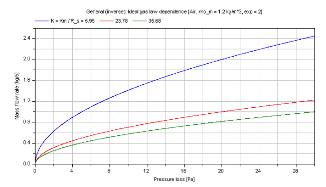

dp_idealGas |
|
Information
This information is part of the Modelica Standard Library maintained by the Modelica Association.
Calculation of a generic pressure loss for an ideal gas using mean density.
Restriction
This function shall be used inside of the restricted limits according to the referenced literature.
- ideal gas
- mean density of ideal gas
Calculation
The geometry parameters of energy devices necessary for the pressure loss calculations are often not exactly known. Therefore the modelling of the detailed pressure loss calculation has to be simplified.
The pressure loss dp for the compressible case [Mass flow rate = f(dp)] is determined by (Eq.1):
m_flow = (R_s/Km)^(1/exp)*(rho_m)^(1/exp)*dp^(1/exp)
for the underlying base equation using ideal gas law as follows:
dp^2 = p_2^2 - p_1^2 = Km*m_flow^exp*(T_2 + T_1) dp = p_2 - p_1 = Km*m_flow^exp*T_m/p_m, Eq.2 with [dp] = Pa, [m_flow] = kg/s
so that the coefficient Km is calculated out of Eq.2:
Km = dp*R_s*rho_m / m_flow^exp , [Km] = [Pa^2/{(kg/s)^exp*K}]
where the mean density rho_m is calculated according to the ideal gas law out of an arithmetic mean pressure and temperature:
rho_m = p_m / (R_s*T_m) , p_m = (p_1 + p_2)/2 and T_m = (T_1 + T_2)/2.
with
| exp | as exponent of pressure loss law [-], |
| dp | as pressure loss [Pa], |
| Km | as coefficient w.r.t. mass flow rate! [Km] = [Pa^2/{(kg/s)^exp*K}], |
| m_flow | as mass flow rate [kg/s], |
| p_m = (p_2 + p_1)/2 | as mean pressure of ideal gas [Pa], |
| T_m = (T_2 + T_1)/2 | as mean temperature of ideal gas [K], |
| rho_m = p_m/(R_s*T_m) | as mean density of ideal gas [kg/m3], |
| R_s | as specific gas constant of ideal gas [J/(kgK)], |
| V_flow | as volume flow rate of ideal gas [m^3/s]. |
Furthermore the coefficient Km can be defined more detailed w.r.t. the definition of pressure loss if Km is not given as (e.g., measured) value. Generally pressure loss can be calculated due to local losses Km,LOC or frictional losses Km,FRI.
Pressure loss due to local losses gives the following definition of Km:
dp = zeta_LOC * (rho_m/2)*velocity^2 is leading to Km,LOC = (8/π^2)*R_s*zeta_LOC/(d_hyd)^4, considering the cross sectional area of pipes.
and pressure loss due to friction is leading to
dp = lambda_FRI*L/d_hyd * (rho_m/2)*velocity^2 Km,FRI = (8/π^2)*R_s*lambda_FRI*L/(d_hyd)^5, considering the cross sectional area of pipes.
with
| dp | as pressure loss [Pa], |
| d_hyd | as hydraulic diameter of pipe [m], |
| Km,i | as coefficients w.r.t. mass flow rate! [Km] = [Pa^2/{(kg/s)^exp*K}], |
| lambda_FRI | as Darcy friction factor [-], |
| L | as length of pipe [m], |
| rho_m = p_m/(R_s*T_m) | as mean density of ideal gas [kg/m3], |
| velocity | as mean velocity [m/s], |
| zeta_LOC | as local resistance coefficient [-]. |
Note that the variables of this function are delivered in SI units so that the coefficient Km shall be given in SI units too.
Verification
Compressible case [Mass flow rate = f(dp)]:
The mass flow rate m_flow for different coefficients Km as parameter is shown in dependence of its pressure loss dp in the figure below.

Note that the verification for dp_idealGas is also valid for this inverse calculation due to using the same functions.
References
- Elmqvist, H., M.Otter and S.E. Cellier:
- Inline integration: A new mixed symbolic / numeric approach for solving differential-algebraic equation systems.. In Proceedings of European Simulation MultiConference, Prague, 1995.